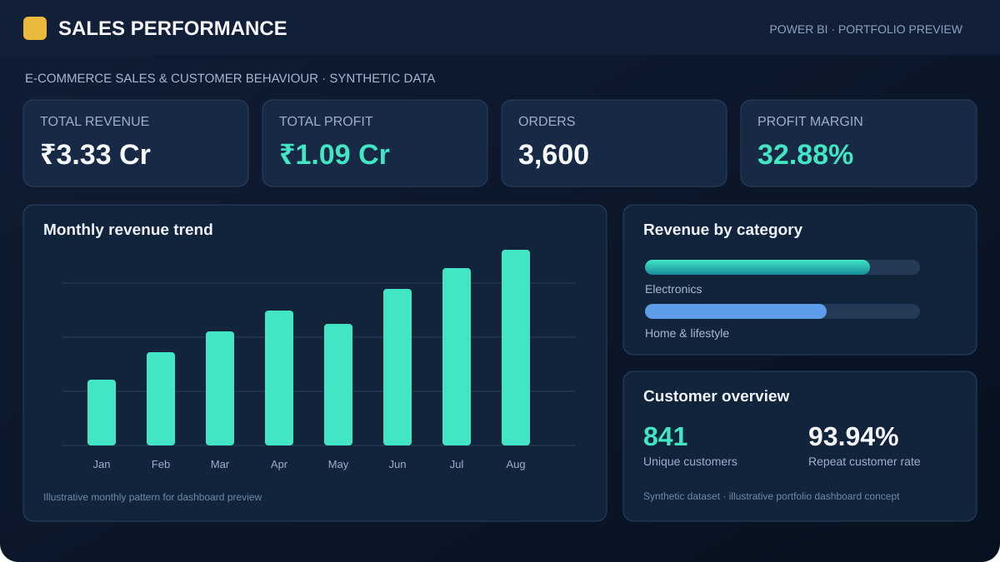
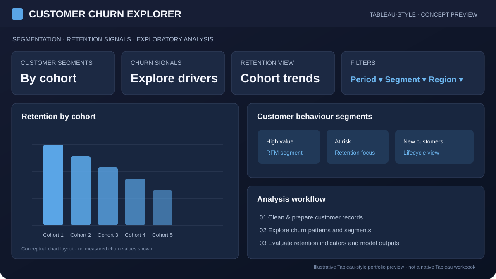
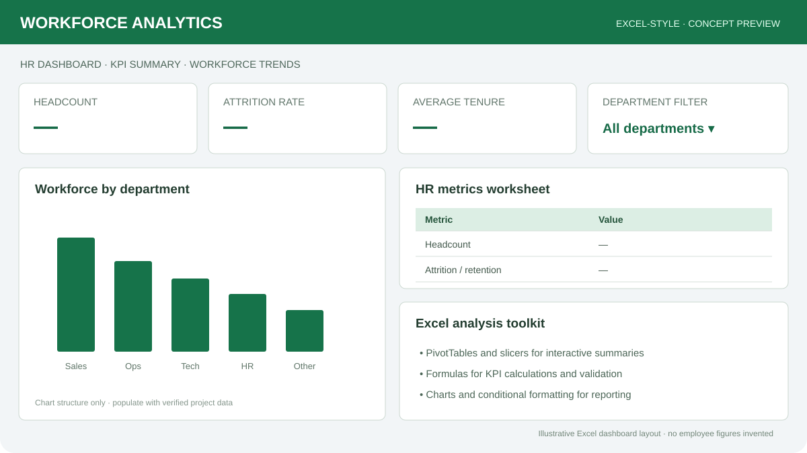

SQL & Databases
MySQL, PostgreSQL, advanced querying, relational databases, and data retrieval for large-scale analysis and reporting.
Data Analyst | SQL · Python · Power BI
I turn complex datasets into clear, actionable business insights. My focus is on analytics, interactive dashboards, funnel and cohort analysis, and predictive modeling that helps teams make better decisions.
I'm a data-driven analyst with hands-on project experience in SQL, Power BI, and Python. I enjoy building automated dashboards, exploring customer behavior, and translating analysis into recommendations that business teams can use.
My project work covers sales funnel analysis, customer churn prediction and segmentation, and HR analytics. I value clean data, reliable reporting, clear documentation, and collaboration with cross-functional stakeholders.
I am currently pursuing a Master of Computer Applications in Data Science at Lovely Professional University. I bring a detail-oriented approach, a strong analytical foundation, and a willingness to learn new tools and methods.
A practical toolkit across data querying, visualization, statistical analysis, and business-focused measurement.
MySQL, PostgreSQL, advanced querying, relational databases, and data retrieval for large-scale analysis and reporting.
Power BI and Excel, including Pivot Tables and VLOOKUP, for dashboards, reporting, and clear data presentation.Working knowledge: Tableau, Superset, Looker
pandas, numpy, matplotlib, seaborn, and scikit-learn for data preparation, statistical analysis, A/B testing, and predictive modeling.
Funnel analysis, cohort analysis, segmentation, retention, and feature adoption to understand user and customer behavior.
CAC, ROI, CTR, and conversion metrics for project-based digital marketing analysis and performance measurement.Project-based exposure
ETL processes, data validation, technical documentation, and Agile methodology to support accurate, repeatable analysis.
Independent projects demonstrating dashboard development, predictive analysis, data validation, and business-oriented recommendations.

An interactive reporting project designed to monitor sales performance, explore conversion patterns and make key metrics easier to track through a consolidated dashboard.

A customer-retention analysis workflow exploring churn patterns and the factors associated with customers leaving a service. The project combines exploratory analysis, data preparation and model evaluation.
An end-to-end retail analytics project built to understand sales performance, profitability, product contribution and customer purchasing behaviour. The workflow uses transaction, customer and product tables, then turns the analysis into reusable outputs for business reporting.
Dataset is synthetic and generated for portfolio practice. All figures and customer patterns are illustrative, not real company results. A Power BI dashboard file is not yet included; DAX measures and dashboard specifications are provided.

A workforce analytics dashboard exploring employee data and HR indicators to support clearer reporting and evidence-based discussions around workforce trends and retention.
Clarify the business question, key metrics, and intended outcome.
Query, clean, transform, and validate data before drawing conclusions.
Use dashboards, segmentation, statistical methods, and predictive techniques.
Document the methodology and translate findings into practical recommendations.
Data Science · Lovely Professional University
Maharaja Agrasen Mahavidyalaya, Bareilly, Uttar Pradesh
I'm open to data analytics opportunities, remote work, and relocation. Available for immediate joining.